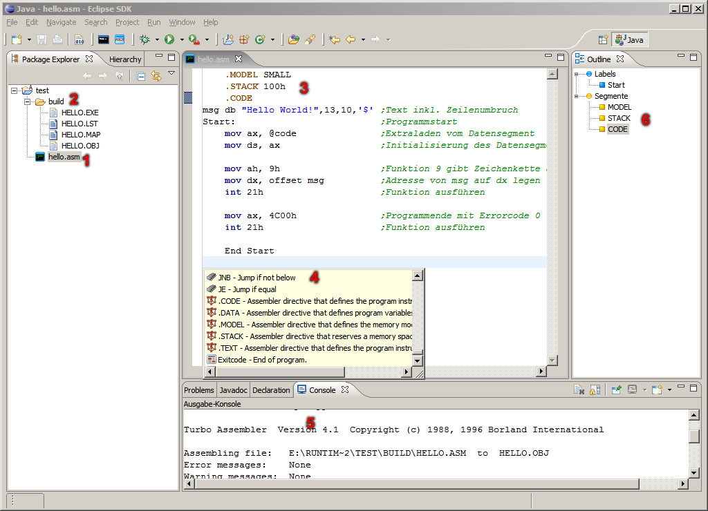

ASM Plug-In - ASM Editor
Here functions of editor or IDE are shown if an ASM file is open.

- Select ASM file.
- All results of the compiling and link process are contained in build directory.
- Open ASM file in the editor.
Changing between text and comment can be concluded with [CTRL]+[7] or [CTRL]+[SHIFT]+[7].
- The content assist can be reported with [CTRL]+[SPACE].
- The output console contains information about the compiling and link process.
- The outline contains links to procedures, macros, labels and segments.